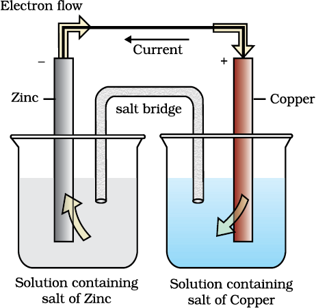

Chemical reactions can be used to produce electrical energy, conversely, electrical energy can be used to carry out chemical reactions that do not proceed spontaneously.
Electrochemistry is the study of production of electricity from energy released during spontaneous chemical reactions and the use of electrical energy
to bring about non-spontaneous chemical transformations. The subject is of importance both for theoretical and practical considerations. A large number of metals, sodium hydroxide, chlorine, fluorine and many other chemicals are produced by electrochemical methods. Batteries and fuel cells convert chemical energy into electrical energy and are used on a large scale in various instruments and devices. The reactions carried out electrochemically can be energy efficient and less polluting. Therefore, study of electrochemistry is important for creating new technologies that are ecofriendly. The transmission of sensory signals through cells to brain and vice versa and communication between the cells are known to have electrochemical origin. Electrochemistry, is therefore, a very vast and interdisciplinary subject. In this Unit, we will cover only some of its important elementary aspects.
Daniel cells convert the chemical energy liberated during the redox reaction
Zn(s) + Cu2+(aq) → Zn2+(aq) + Cu(s)
 \
Daniell cell having electrodes of zinc and copper dipping in the solutions of their respective salts.
to electrical energy and has an electrical potential equal to 1.1 V when concentration of Zn2+ and Cu2+ ions is unity (1 mol dm–3)*. Such a device is called a galvanic or a voltaic cell.
If an external opposite potential is applied in the galvanic cell and increased slowly, we find that the reaction continues to take place till the opposing voltage reaches the value 1.1 V when, the reaction stops altogether and no current flows through the cell. Any further increase in the external potential again starts the reaction but in the opposite direction. It now functions as an electrolytic cell, a device for using electrical energy to carry non-spontaneous chemical reactions. Both types of cells are quite important and we shall study some of their salient features in the following pages.

When Eext < 1.1 V
(i) Electrons flow from Zn rod to Cu rod hence current flows from Cu to Zn.
(ii) Zn dissolves at anode and copper deposits at cathode.
When Eext = 1.1 V
(i) No flow of electrons or current.
(ii) No chemical reaction.

(c)
When Eext > 1.1 V
(i) Electrons flow from Cu to Zn and current flows from Zn to Cu.
(ii) Zinc is deposited at the zinc electrode and copper dissolves at copper electrode.